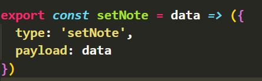
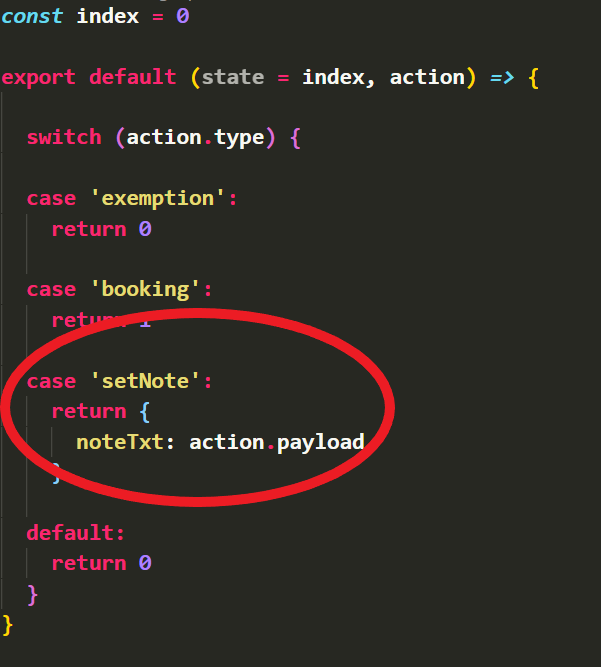
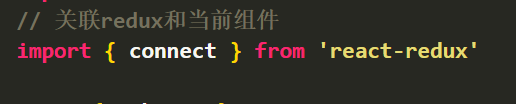
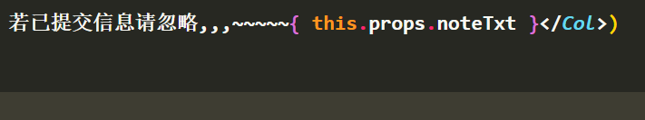
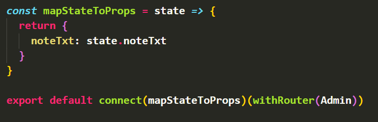

react-redux原理图：
实现方法：
前提：项目入口文件中引入reducer,创建store,添加provider
1. 定义action，返回一个type用以区分各个不同的action,type值必须唯一，reducer通过type来判断执行哪一个action：可以新建一个action.js文件或者随便什么名字，名字不重要，只要export的符合规范就行

2. 定义action的处理逻辑reducer, 用以响应action, reducer本质是一个函数，接收两个参数，一个参数preState,一个action;preState表示store中的state,它可以是一个键值对，可以是数组，可以是对象，类型不限；reducer函数返回一个值：可以新建一个reducer.js文件或者随便什么名字，可以单独新建文件，也可以与action在同一个文件，不重要
reducer会返回一个全局state,可以在全局任何地方使用

3. 定义好了，就该使用了，在需要使用数据的地方引入react-redux，connect组件与store, 解构数据，通过props使用；在需要修改全局store中state的地方，引入react-redux,connect组件与store,解构纯函数，在需要修改的地方使用props传入参数


